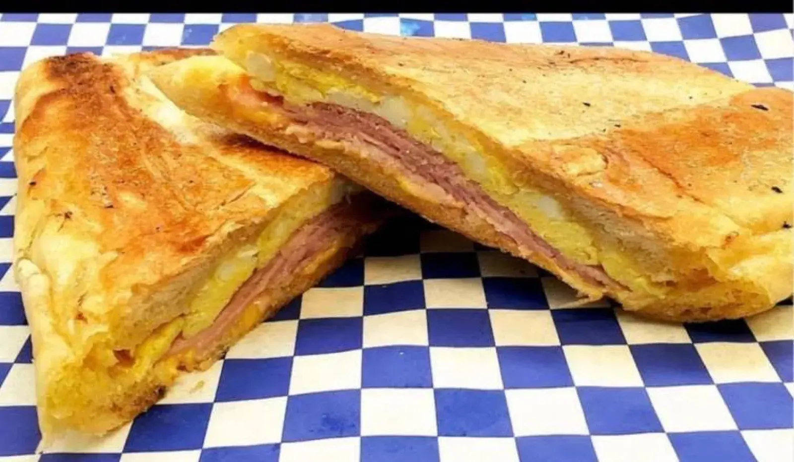
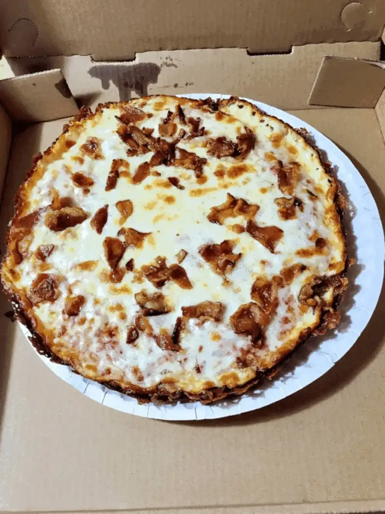
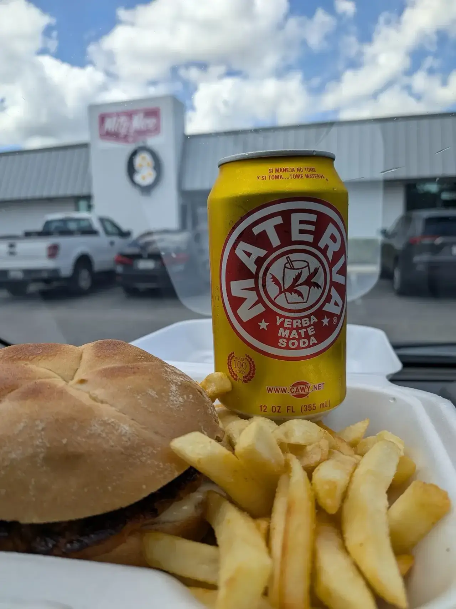
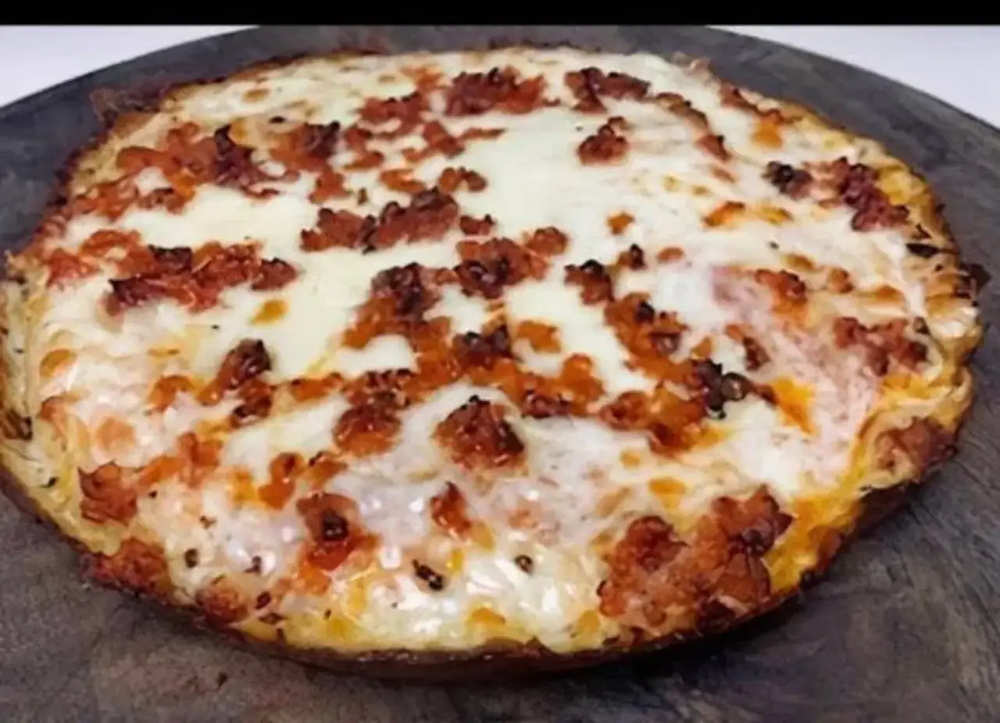
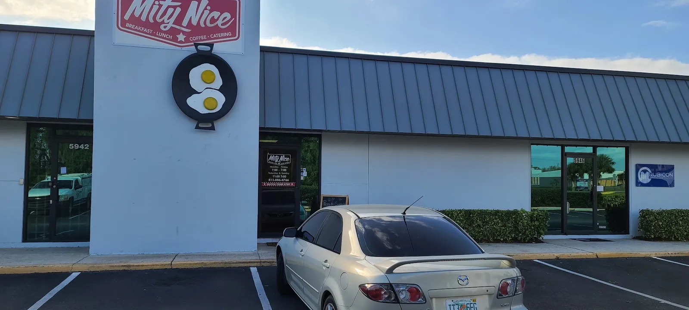
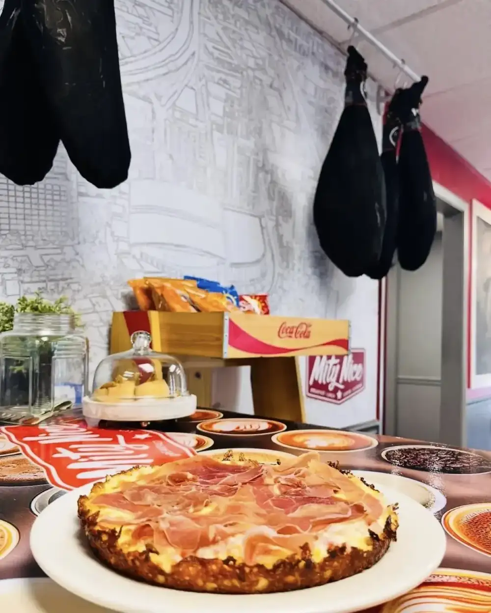

Cuban sandwiches
Pressed Cuban sandwiches. Also a Palomilla steak sandwich, a Mity Burger and the Garlic Goodness.
Cuban cafe · Benjamin Rd, Tampa
Pressed Cubans, cafe con leche, breakfast, burgers and pizza.

What to order first
Cuban sandwiches, breakfast and coffee.
Pressed Cuban sandwiches. Also a Palomilla steak sandwich, a Mity Burger and the Garlic Goodness.

Eggs, potatoes and steak on a plate.

Cafe con leche, and cappuccinos poured with a leaf on top.




4.7 ★ · 564 Google reviews
GUEST CHECK№ 1I loved the quality of the food. My first visit I ordered the burger and chicken soup. It tasted homemade. I came back the next day and had breakfast. The Cuban sandwich has to be the best I’ve had in Tampa. Glad I found this spot.
GUEST CHECK№ 2Stopped in for lunch and it was great! Joe provided us with some great suggestions for our first time. We each got something different. Everything was delicious but the winner was the Garlic Goodness! Melty cheese yum! Palomilla Steak sandwich and Mity Burger came in close 2nd. Got cuban to take home.We will definitely be back and sharing this place with our friends!
GUEST CHECK№ 3The cafe con leche was literally so perfect. Not too hot. No to bitter, just right amount of sugar. The food was hot and delicious and didn't take long after all!

Since the first pot of coffee
A red sign with a fried egg on it marks the spot. Open seven days a week.
Homemade-tasting food, a clean, comfortable room and friendly staff. Stay for lunch or take a Cuban home.
Slide on in
5944 Benjamin Rd, Tampa, FL 33634
Open every day. Take a Cuban to go, or grab pizza to-go.